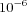

The particle swarm optimization method suggested by Kennedy and Eberhart [
Kennedy95] is inspired by a flock of birds or a school of fish searching for food. Each particle has a position Xi and a velocity Vi in the parameter space. Additionally, it remembers its best achieved objective value O and position Mi. Dependent on its own information and the position of its best neighbor (a random subset of particles of the swarm) a new velocity is calculated. With this information the position is updated. The pseudo code for the algorithm for each particle is:
N = best neighbor's position
for i = 0 to number of parameters do
R1 = uniform random number in [0, 1]
R2 = uniform random number in [0, 1]
V[i]= w * V[i]
+ C * R1 * (M[i]- X[i])
+ C * R2 * (N[i]- X[i])
X[i] = X[i] + V[i]
enddo
current_O = evaluate objective function
if current_O < O then do
O = current_O
M = X
enddo
Options for Particle Swarm
- Iteration Limit
- This parameter is a positive integer to determine the maximum number of iterations the method is to perform. The default value is '2000'.
- Swarm Size
- This parameter is a positive integer specifying the number of particles in the swarm. The default value is '50'.
- Std. Deviation
- This parameter is a positive number and provides an alternative termination criteria. If the standard deviation of the values of the objective function of each particle and the standard deviation of the best positions is smaller than the provided value the algorithm stops. The default value is .
- Random Number Generator
- The parameter is an enumeration value to determine which random number generator this method shall use. COPASI provides two random number generators R250 [Maier91] (selected through the value 0) and the Mersenne Twister [Matsumoto98] (selected through the value 1 (default)).
- Seed
- The parameter is a positive integer value to determine the seed for the random number generator. A value of zero instructs COPASI to select a "random" value.